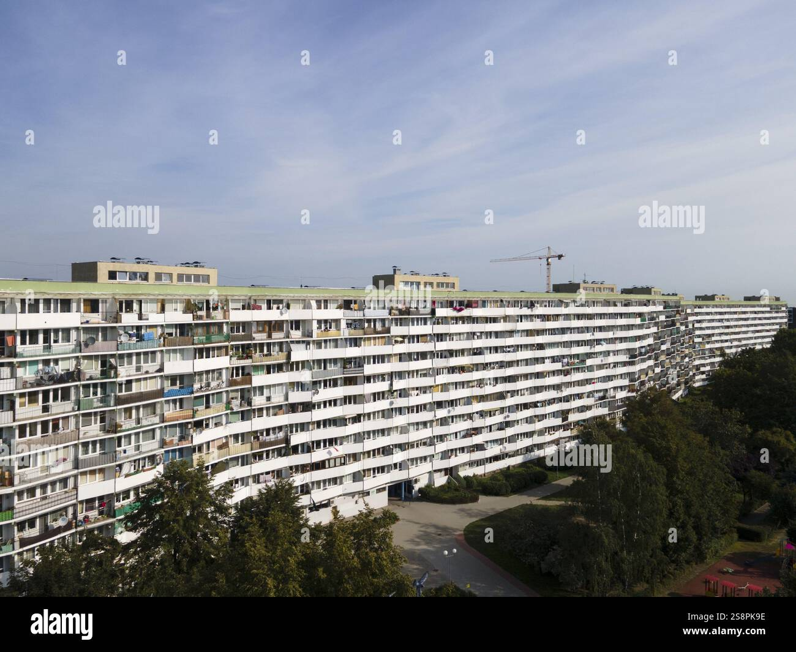
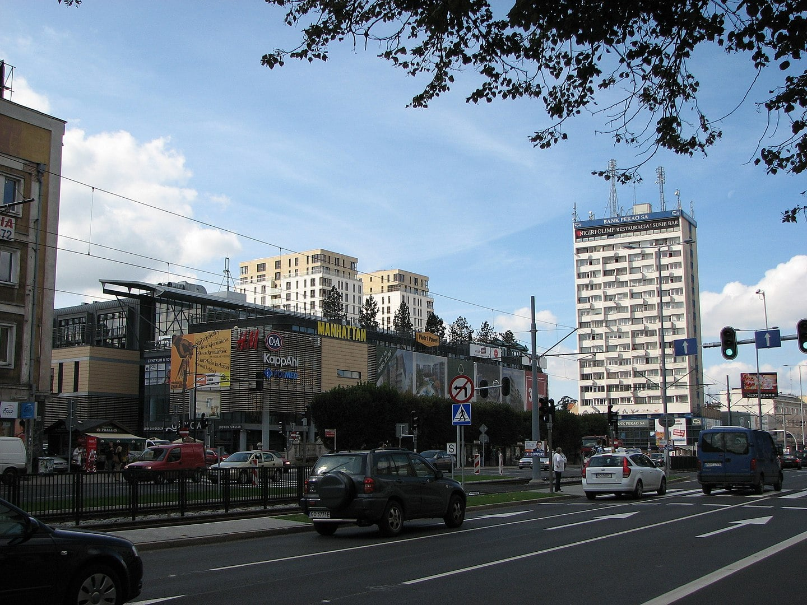
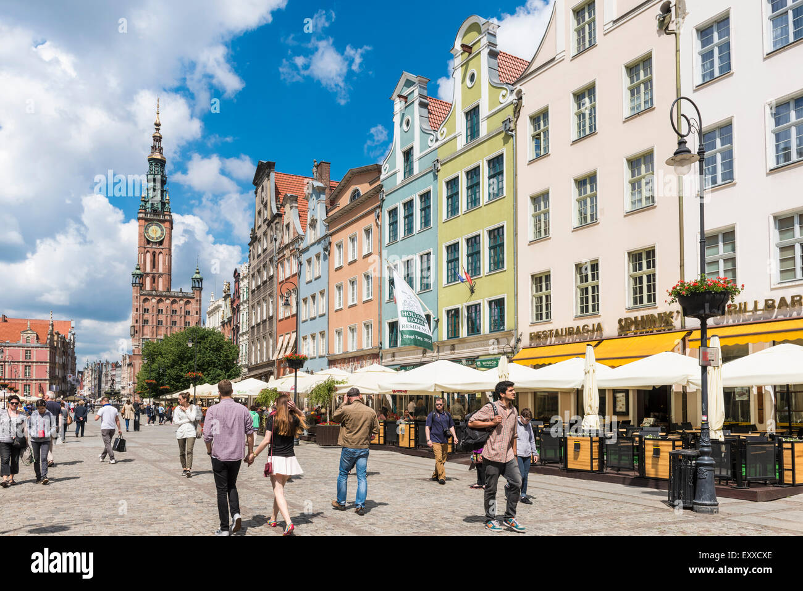
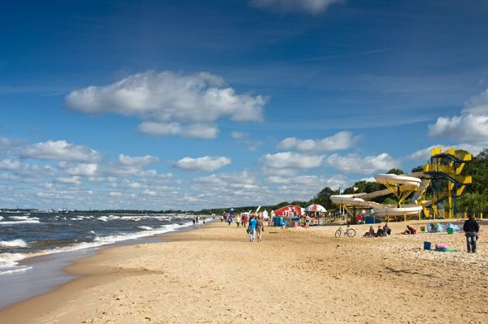

Miejsca warte do odwiedzenia:
Przymorze Wielkie
Przymorze Wielkie jest wschodnią częścią obszaru Przymorze. Leży w mezoregionie Pobrzeże Kaszubskie.
Więcej o PrzymorzuWrzeszcz
Część Gdańska, znajdująca się na północ od Śródmieścia, podzielona na Wrzeszcz Górny i Dolny.
Więcej o WrzeszczuGdańsk Główny
Największa pasażerska stacja kolejowa w Gdańsku, położona przy ulicy Podwale Grodzkie.
Więcej o Gdańsku GłównymPlaża Jelitkowo
Nadmorska część miasta Gdańska z przystanią morską dla rybaków i letnim kąpieliskiem.
Więcej o JelitkowieFAQ
Ceny lotów zaczynają się już od około 100–150 zł, w zależności od przewoźnika i terminu.
Najwygodniej dojechać kolejką PKM lub autobusem 210. Podróż trwa ok. 25–30 minut.
Najpopularniejsze miejsca to Stare Miasto, Westerplatte, Muzeum II Wojny Światowej i molo w Brzeźnie.
Mapa najciekawszych miejsc w Gdańsku:
Skontaktuj się z nami:
ul. Malika i Diha, 31-420 Gdańsk
kontakt@gdansk.pl
+48 333 444 555
Newsletter
Zapisz się i otrzymuj aktualności o Gdańsku!
Komentarze:
Ala: Super artykuł!
Bartek: Bardzo ciekawe, dzięki!